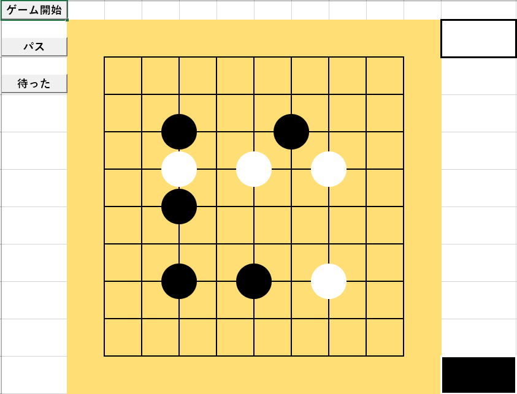

Excel囲碁：万波奈穂先生に捧ぐ

Excelで囲碁を作ってみます。
AI搭載とかそんな大層なものではありません。
人vs人で対戦できる程度、単純に黒白交互に打っていけるものです。
ただし、
・相手の石を囲んだら相手の石を取るのは自動にします。
・着手禁止点には着手できないようにします。
Excel囲碁を作るきっかけ
万波奈穂@naonao_myu
こちらの先生のツイート
#１日１ツイートで囲碁ルールを説明したら何日で伝えられるか
ときどき問題が出されて回答する時は、画像の切り貼りをしたりしていましたが、
せっかくなので、エクセルで囲碁を作ろうと思ったものです。
棋譜の出力や、棋譜を読み込んで自動再生させたりと、それなりのソフトとして作成しました。
単純に黒白交互に打っていければ良いと思い作成を開始しました。
それでも、
・相手の石を囲んだら相手の石を取るのは自動にします。
・着手禁止点には着手できないようにします。
このくらいは入れておきました。
「コウ」については、そもそもルールの理解があやふやなので、、、
ちゃんと理解出来たら次に実装します。
たぶん、合っていると思いますが、、、
Excel囲碁の動作
碁盤作成
先手の黒から交互に打つ
囲まれた石は自動で取られてアゲハマに
着手禁止点には打てない
コウ
パス
待ったで1手戻す
全体の処理流れ
ゲーム開始
路盤数の後ろに続けてカンマ(,)の後ろに1路の幅をビクセルで指定できます。
1路の幅を指定しない場合は、550ピクセルを路盤数で割っています。
図形には、
OnAction = "打つ"
これでクリック イベントが発生するようにしておきます。
碁石0101,碁石0102,・・・
碁石0201,碁石0202,・・・
このように、
"碁石"+行2桁+縦2桁
これにより碁石の位置を把握するようにしています。
先手後手により、黒白の色にして、Transparency = 0で見えるようにします。
パス
待った
その履歴から盤面を再現しています。
アゲハマも同様に履歴保存し、待ったで戻しています。
相手の石を取る
"碁石0101"このような図形の名前から、路盤数の2次元配列を作成します。
黒は1、白は2、無しは0
PrintArray(ary) 'これはデバッグ用
これを使ってイミディエイトに表示すると、
2 0 0 0 0 0 0 0 0
0 0 0 0 0 0 0 0 0
0 0 0 0 0 0 2 0 0
0 0 0 0 1 2 0 0 0
0 0 0 1 2 1 0 0 0
0 0 0 1 2 2 1 0 0
0 0 0 0 1 2 2 1 0
0 0 0 0 0 1 2 2 1
0 0 0 0 0 0 1 2 *
着手した時点で、作成した配列の着手した地点の上下左右の位置に相手の石があるかを判定します。
例えば、先手の黒なら1なので、その地点の上下左右に白の2があるの判定です。
上記の配列の右下の*に黒1を入れた時、その左隣が2なので、この石が取れるかの判定に進みます。
この部分が、「相手碁石確認」になります。
上記の配列の右下*に1が入ることで、2は1に囲まれています。
左隣の2から順次上下左右に同じ2を辿りながら、石の無い(0)がでてくるか、連続している全ての白2を調査するまで再帰が繰り返されます。
この再帰が、「相手碁石何奪取」です。
上下左右を辿って行って、辿る先が無くなったら（連続する石が無くなったら）再帰は終了します。
つまり、再帰の途中で空白（0）に出会わずに最後まで行くと、その石は囲まれていることになります。
ただし上下左右に進むので、元の石に戻ってしまいますので、一度判定した石は配列を9にしておきます。
消した碁石の数は、アゲハマに足していきます。
この実際に石を取るのが、「相手碁石奪取」です。
着手禁止点に着手させない
まずは、実際に着手して盤面を進めてしまいます。
着手した石が相手の石に囲まれている場合でも、その1手で相手の石を取れる場合もあります。
その場合は、相手の石をとった結果として、自分の着手した石は囲まれた状態ではなくなります。
この着手禁止点の判定になった場合は、「待った」の機能で1手戻すことにより、着手できない状態を作り出しています。
再帰処理について
ゲームとして以下に挑戦すると再帰が良くわかると思います。
数独（ナンプレ）を解くVBAに挑戦
Excel囲碁の全VBAコード
また、データ型もかなりきっちり指定したVBAにしています。
さらに、Call文を省略したりと、かなり対照的なVBAとなっています。
両者を見比べると、いろいろな意味で参考になると思います。
Option Explicit
Public Const c碁盤色 = &H75DEFF 'RGB(255, 222, 117)
Public g路盤数 As Integer '9,13,15,19
Public g碁盤幅 As Long 'ピクセル指定
Public gWS As Worksheet
Public g先手アゲハマ As Range
Public g後手アゲハマ As Range
Public g手数 As Long
Public gCols配列
Public gCols先手アゲハマ
Public gCols後手アゲハマ
Public gStrコウ
Enum e碁石
無
黒
白
End Enum
Sub ゲーム開始()
Dim inputStr
start:
inputStr = InputBox("路盤数を指定してください。" & vbLf & vbLf & _
"続けてカンマ(,)の後ろに1路の幅をビクセルで指定できます。" & vbLf & _
"例．" & vbLf & _
"9" & vbLf & _
"9,60", "碁盤初期設定")
If inputStr = "" Then Exit Sub
Dim sSplit: sSplit = Split(inputStr, ",")
Dim i
For i = 0 To UBound(sSplit)
If Not IsNumeric(sSplit(0)) Then
GoTo start
End If
Next
g路盤数 = sSplit(0)
If UBound(sSplit) = 0 Then
g碁盤幅 = 550 / g路盤数
Else
g碁盤幅 = sSplit(1)
End If
Set gWS = ActiveSheet
Dim myRange
Set myRange = gWS.Range("B2")
Application.ScreenUpdating = False
Set gWS = myRange.Worksheet
シート設定 myRange
アゲハマ場所作成 myRange
碁石作成 myRange
g手数 = 0
Set gCols配列 = New Collection
Set gCols先手アゲハマ = New Collection
Set gCols後手アゲハマ = New Collection
gCols配列.Add 配列作成, CStr(g手数)
gCols先手アゲハマ.Add g先手アゲハマ.Value, CStr(g手数)
gCols後手アゲハマ.Add g後手アゲハマ.Value, CStr(g手数)
g手数 = g手数 + 1
Application.ScreenUpdating = True
End Sub
Sub 打つ()
Dim sp碁石: Set sp碁石 = gWS.Shapes(Application.Caller)
If 碁石判別(sp碁石) <> e碁石.無 Then
Exit Sub
End If
If コウ判定(sp碁石) Then
Exit Sub
End If
sp碁石.Fill.ForeColor.RGB = IIf(先手, vbBlack, vbWhite)
sp碁石.Fill.Transparency = 0
相手碁石確認 sp碁石
gCols配列.Add 配列作成, CStr(g手数)
gCols先手アゲハマ.Add g先手アゲハマ.Value, CStr(g手数)
gCols後手アゲハマ.Add g先手アゲハマ.Value, CStr(g手数)
g手数 = g手数 + 1
着手禁止点 sp碁石
End Sub
Sub 待った()
If g手数 = 1 Then Exit Sub
Dim sp碁石, i, j
For Each sp碁石 In gWS.Shapes
If sp碁石.Name Like "碁石*" Then
碁石Index sp碁石, i, j
Select Case gCols配列(g手数 - 1)(i, j)
Case e碁石.黒
sp碁石.Fill.Transparency = 0
sp碁石.Fill.ForeColor.RGB = vbBlack
Case e碁石.白
sp碁石.Fill.Transparency = 0
sp碁石.Fill.ForeColor.RGB = vbWhite
Case e碁石.無
sp碁石.Fill.Transparency = 1
End Select
End If
Next
gCols配列.Remove g手数
g先手アゲハマ.Value = gCols先手アゲハマ(g手数 - 1)
g後手アゲハマ.Value = gCols後手アゲハマ(g手数 - 1)
gCols先手アゲハマ.Remove g手数
gCols後手アゲハマ.Remove g手数
g手数 = g手数 - 1
End Sub
Function コウ判定(sp碁石)
Dim i, j
碁石Index sp碁石, i, j
If gStrコウ = 文字列Index(i, j) & "," Then
MsgBox "コウなので打てません。"
コウ判定 = True
Exit Function
End If
gStrコウ = ""
End Function
Sub 着手禁止点(sp碁石)
Dim y, x, tValue, rtn
碁石Index sp碁石, y, x
Dim ary: ary = 配列作成
rtn = True
相手碁石何奪取 ary, y, x, IIf(先手, e碁石.白, e碁石.黒), rtn
If rtn Then
MsgBox "着手禁止点です。"
待った
End If
End Sub
Sub パス()
gCols配列.Add 配列作成, CStr(g手数)
g手数 = g手数 + 1
End Sub
Function 先手()
先手 = CBool(g手数 Mod 2)
End Function
Sub 相手碁石確認(sp碁石)
Dim y, x, ary, tValue, rtn
Dim cntコウ: cntコウ = 0
碁石Index sp碁石, y, x
tValue = IIf(先手, e碁石.白, e碁石.黒) '相手碁石
If y > 1 Then
ary = 配列作成
If ary(y - 1, x) = tValue Then
rtn = True
相手碁石何奪取 ary, y - 1, x, tValue, rtn
If rtn Then 相手碁石奪取 ary
End If
End If
If y < g路盤数 Then
ary = 配列作成
If ary(y + 1, x) = tValue Then
rtn = True
相手碁石何奪取 ary, y + 1, x, tValue, rtn
If rtn Then 相手碁石奪取 ary
End If
End If
Call PrintArray(ary)
If x > 1 Then
ary = 配列作成
If ary(y, x - 1) = tValue Then
rtn = True
相手碁石何奪取 ary, y, x - 1, tValue, rtn
If rtn Then 相手碁石奪取 ary
End If
End If
If x < g路盤数 Then
ary = 配列作成
If ary(y, x + 1) = tValue Then
rtn = True
相手碁石何奪取 ary, y, x + 1, tValue, rtn
If rtn Then 相手碁石奪取 ary
End If
End If
End Sub
Sub 相手碁石何奪取(ary, y, x, tValue, rtn)
If rtn = False Then Exit Sub
ary(y, x) = 9
If y > 1 Then
If ary(y - 1, x) = 0 Then
rtn = False: Exit Sub
ElseIf ary(y - 1, x) = tValue Then
相手碁石何奪取 ary, y - 1, x, tValue, rtn
End If
End If
If y < g路盤数 Then
If ary(y + 1, x) = 0 Then
rtn = False: Exit Sub
ElseIf ary(y + 1, x) = tValue Then
相手碁石何奪取 ary, y + 1, x, tValue, rtn
End If
End If
If x > 1 Then
If ary(y, x - 1) = 0 Then
rtn = False: Exit Sub
ElseIf ary(y, x - 1) = tValue Then
相手碁石何奪取 ary, y, x - 1, tValue, rtn
End If
End If
If x < g路盤数 Then
If ary(y, x + 1) = 0 Then
rtn = False: Exit Sub
ElseIf ary(y, x + 1) = tValue Then
相手碁石何奪取 ary, y, x + 1, tValue, rtn
End If
End If
End Sub
Sub 相手碁石奪取(ary)
gStrコウ = ""
Dim sp, i, j
For i = LBound(ary, 1) To UBound(ary, 1)
For j = LBound(ary, 2) To UBound(ary, 2)
If ary(i, j) = 9 Then
Set sp = gWS.Shapes("碁石" & Format(i, "00") & Format(j, "00"))
sp.Fill.Transparency = 1
If 先手 Then
g先手アゲハマ = g先手アゲハマ & "●"
g先手アゲハマ.EntireColumn.AutoFit
Else
g後手アゲハマ = g後手アゲハマ & "●"
g後手アゲハマ.EntireColumn.AutoFit
End If
gStrコウ = gStrコウ & 文字列Index(i, j) & ","
DoEvents
Application.Wait [now()+"0:0:0.1"]
End If
Next
Next
End Sub
Function 碁石判別(sp碁石) As e碁石
Select Case True
Case sp碁石.Fill.Transparency = 1
碁石判別 = 無
Case sp碁石.Fill.ForeColor.RGB = vbBlack
碁石判別 = 黒
Case sp碁石.Fill.ForeColor.RGB = vbWhite
碁石判別 = 白
End Select
End Function
Sub 碁石Index(sp碁石, i, j)
i = CLng(Mid(sp碁石.Name, 3, 2))
j = CLng(Mid(sp碁石.Name, 5, 2))
End Sub
Function 配列作成()
ReDim ary(1 To g路盤数, 1 To g路盤数)
Dim sp碁石, i, j
For Each sp碁石 In gWS.Shapes
If sp碁石.Name Like "碁石*" Then
Call 碁石Index(sp碁石, i, j)
ary(i, j) = 碁石判別(sp碁石)
End If
Next
配列作成 = ary
End Function
Sub シート設定(argRng)
argRng.Worksheet.Cells.Clear
ClearShapes argRng.Worksheet
With argRng.Resize(g路盤数 + 1, g路盤数 + 1)
ColumnWidthPixcel .Cells, CLng(g碁盤幅)
RowHeightPixcel .Cells, CLng(g碁盤幅)
.Interior.Color = c碁盤色
End With
With argRng.Offset(1, 1).Resize(g路盤数 - 1, g路盤数 - 1)
.Borders.LineStyle = xlContinuous
.Borders.Weight = xlMedium
End With
End Sub
Sub アゲハマ場所作成(argRng)
Set g先手アゲハマ = argRng.Offset(g路盤数, g路盤数 + 1)
アゲハマ場所共通 g先手アゲハマ, vbBlack, vbWhite
Set g後手アゲハマ = argRng.Offset(, g路盤数 + 1)
アゲハマ場所共通 g後手アゲハマ, vbWhite, vbBlack
ColumnWidthPixcel g先手アゲハマ.EntireColumn, CLng(g碁盤幅) * 2
ColumnWidthPixcel g先手アゲハマ.EntireColumn, CLng(g碁盤幅) * 2
End Sub
Sub アゲハマ場所共通(argRng, argColor1, argColor2)
With argRng
.Font.Color = argColor2
.Font.Bold = True
.Interior.Color = argColor1
.HorizontalAlignment = xlCenter
.BorderAround xlContinuous, xlThick, , argColor2
End With
End Sub
Sub ClearShapes(ws)
Dim sp
For Each sp In ws.Shapes
If sp.Name Like "碁石*" Then
sp.Delete
End If
Next
End Sub
Sub 碁石作成(argRng)
Dim i, j
For i = 1 To g路盤数
For j = 1 To g路盤数
透明碁石作成 argRng, i, j
Next
Next
End Sub
Function 透明碁石作成(argRng, i, j)
On Error Resume Next
Dim sp
Set sp = argRng.Worksheet.Shapes.AddShape(msoShapeOval, 0, 0, PixcelToPoint(g碁盤幅) - 2, PixcelToPoint(g碁盤幅) - 2)
sp.Fill.Transparency = 1
sp.Fill.ForeColor.RGB = vbWhite
sp.Line.Visible = msoFalse
sp.Top = argRng.Offset(i, j).Top - argRng.Offset(i, j).RowHeight / 2 + 1
sp.Left = argRng.Offset(i, j).Left - argRng.Offset(i, j).Width / 2 + 1
sp.OnAction = "打つ"
sp.Name = "碁石" & 文字列Index(i, j)
Set 透明碁石作成 = sp
End Function
Function 文字列Index(i, j)
文字列Index = Format(i, "00") & Format(j, "00")
End Function
Sub PrintArray(ary) 'これはデバッグ用
Dim i, j
For i = LBound(ary, 1) To UBound(ary, 1)
For j = LBound(ary, 2) To UBound(ary, 2)
Debug.Print ary(i, j);
Next
Debug.Print
Next
End Sub
上記VBAで使っている、
ColumnWidthPixcel
RowHeightPixcel
これらは、以下の解説ページで紹介しているVBAを使っています。
適当な数値で合わせてしまえば良いのですが、路盤数を自由に設定できるようにしたので、列幅行高もきっちり合うようにしたものです。
Option Explicit
Private Declare PtrSafe Function GetDesktopWindow Lib "user32" () As Long
Private Declare PtrSafe Function GetDC Lib "user32" ( _
ByVal hWnd As Long) As Long
Private Declare PtrSafe Function GetDeviceCaps Lib "gdi32" ( _
ByVal hdc As Long, ByVal nIndex As Long) As Long
Private Declare PtrSafe Function ReleaseDC Lib "user32" ( _
ByVal hWnd As Long, ByVal hdc As Long) As Long
'GetDeviceCapsのnIndex設定値
Private Const LOGPIXELSX As Long = 88
Private Const LOGPIXELSY As Long = 90
'行高をピクセルで設定
Public Sub RowHeightPixcel(ByVal aRange As Range, aPixcel As Long)
aRange.EntireRow.RowHeight = PixcelToPoint(aPixcel)
End Sub
'列幅をピクセルで指定
Public Sub ColumnWidthPixcel(ByVal aRange As Range, aPixcel As Long)
Dim colRange As Range, colRange1c As Range
Set colRange = aRange.EntireColumn
Set colRange1c = colRange.Columns(1)
Dim colWidth As Single
Dim inc As Single, iSign As Integer, iSign2 As Integer
'先頭列のみ大雑把に列幅を設定
colWidth = WorksheetFunction.Round(aPixcel * 0.1 * GetDpi / LogicalPixcel, 1)
colRange1c.ColumnWidth = colWidth
'目標値の方向を1の±符号で
iSign = IIf(PointToPixcel(colRange1c.Width) > aPixcel, -1, 1)
'0.1単位で増減させて一致するまでループ
Do
'先頭列が目標値なら全列設定して終了
If PointToPixcel(colRange1c.Width) = aPixcel Then
Call CopyColumnWidth(colRange, colRange1c)
Exit Sub
End If
'先頭列が最大値なら全列設定して終了
If colRange1c.ColumnWidth = 255 Then
Call CopyColumnWidth(colRange, colRange1c)
Exit Sub
End If
'0.1単位で増減させる
colWidth = WorksheetFunction.Round(colWidth + (0.1 * iSign), 1)
'行き過ぎてしまったときの永久ループ対策
iSign2 = IIf(PointToPixcel(colRange1c.Width) > aPixcel, -1, 1)
If iSign <> iSign2 Then
MsgBox "ダメ、おかしい"
Exit Sub
End If
'先頭列のみ列幅を変更
colRange1c.ColumnWidth = colWidth
Loop
End Sub
Public Sub CopyColumnWidth(ByVal aRng1 As Range, ByVal aRng2 As Range)
aRng1.ColumnWidth = aRng2.ColumnWidth
End Sub
'ポイントをピクセルに変換
Public Function PointToPixcel(ByVal aPoint As Single) As Long
PointToPixcel = aPoint / 72 * LogicalPixcel
End Function
'ピクセルをポイントに変換
Public Function PixcelToPoint(ByVal aPixcel As Long) As Single
PixcelToPoint = aPixcel * 72 / LogicalPixcel
End Function
'DPIを取得：ディスプレイの拡大率込
Public Function LogicalPixcel() As Long
'デスクトップのウィンドウハンドルを取得
Dim hWndDesk As Long
hWndDesk = GetDesktopWindow()
'デバイスコンテキストを取得
Dim hDCDesk As Long
hDCDesk = GetDC(hWndDesk)
'デバイス固有情報を取得
LogicalPixcel = GetDeviceCaps(hDCDesk, LOGPIXELSX)
'デバイスコンテキストを解放
Call ReleaseDC(hWndDesk, hDCDesk)
End Function
'DPIを取得：標準
Public Function GetDpi() As Long
Const cSql As String = "Select * From Win32_DisplayConfiguration"
With CreateObject("WbemScripting.SWbemLocator").ConnectServer
GetDpi = .ExecQuery(cSql).ItemIndex(0).LogPixels
End With
End Function
Excel囲碁のダウンロード
同じテーマ「マクロVBAサンプル集」の記事
数独（ナンプレ）を解くVBAに挑戦№1
数独（ナンプレ）を解くアルゴリズムの要点とパフォーマンスの検証№1
ナンバーリンク(パズル)を解くVBAに挑戦№1
ナンバーリンクを解くVBAのパフォーマンス改善№1
オセロを作りながらマクロVBAを学ぼう
他ブックへのリンクエラーを探し解除
Excelシートの複雑な計算式を解析するVBA
Excel将棋：マクロVBAの学習用(№1)
Excel囲碁：万波奈穂先生に捧ぐ
Excel囲碁：再起動後も続けて打てるように改造
エクセルVBAで15パズルを作ってみた
新着記事NEW ・・・新着記事一覧を見る
VBA100本ノック 100本目：WEBから100本ノックのリストを取得｜VBA練習問題（3月3日）
VBA100本ノック 99本目：自動席替え（行列と前後左右が全て違うように）｜VBA練習問題（3月2日）
VBA100本ノック 98本目：席替えルールが守られているか確認｜VBA練習問題（3月1日）
VBA100本ノック 97本目：Accessデータを取得（グループ集計）｜VBA練習問題（2月27日）
VBA100本ノック 96本目：Accessデータを取得（マスタ結合&抽出）｜VBA練習問題（2月26日）
VBA100本ノック 95本目：図形のテキストを検索するフォーム作成｜VBA練習問題（2月24日）
VBA100本ノック 94本目：表範囲からHTMLのtableタグを作成｜VBA練習問題（2月23日）
VBA100本ノック 93本目：複数ブックを連結して再分割｜VBA練習問題（2月22日）
VBA100本ノック 92本目：セルの色を16進で返す関数｜VBA練習問題（2月20日）
VBA100本ノック 91本目：時間計算（残業時間の月間合計）｜VBA練習問題（2月19日）
アクセスランキング ・・・ ランキング一覧を見る
1.最終行の取得（End,Rows.Count）｜VBA入門
2.RangeとCellsの使い方｜VBA入門
3.変数宣言のDimとデータ型｜VBA入門
4.マクロって何？VBAって何？｜VBA入門
5.Range以外の指定方法（Cells,Rows,Columns）｜VBA入門
6.セルのコピー&値の貼り付け（PasteSpecial）｜VBA入門
7.繰り返し処理（For Next)｜VBA入門
8.セルに文字を入れるとは（Range,Value）｜VBA入門
9.マクロはどこに書くの（VBEの起動）｜VBA入門
10.とにかく書いてみよう（Sub,End Sub）｜VBA入門
- ホーム
- マクロVBA応用編
- マクロVBAサンプル集
- Excel囲碁：万波奈穂先生に捧ぐ
このサイトがお役に立ちましたら「シェア」「Bookmark」をお願いいたします。
記述には細心の注意をしたつもりですが、
間違いやご指摘がありましたら、「お問い合わせ」からお知らせいただけると幸いです。
掲載のVBAコードは動作を保証するものではなく、あくまでVBA学習のサンプルとして掲載しています。
掲載のVBAコードは自己責任でご使用ください。万一データ破損等の損害が発生しても責任は負いません。